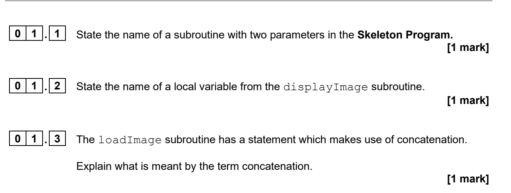
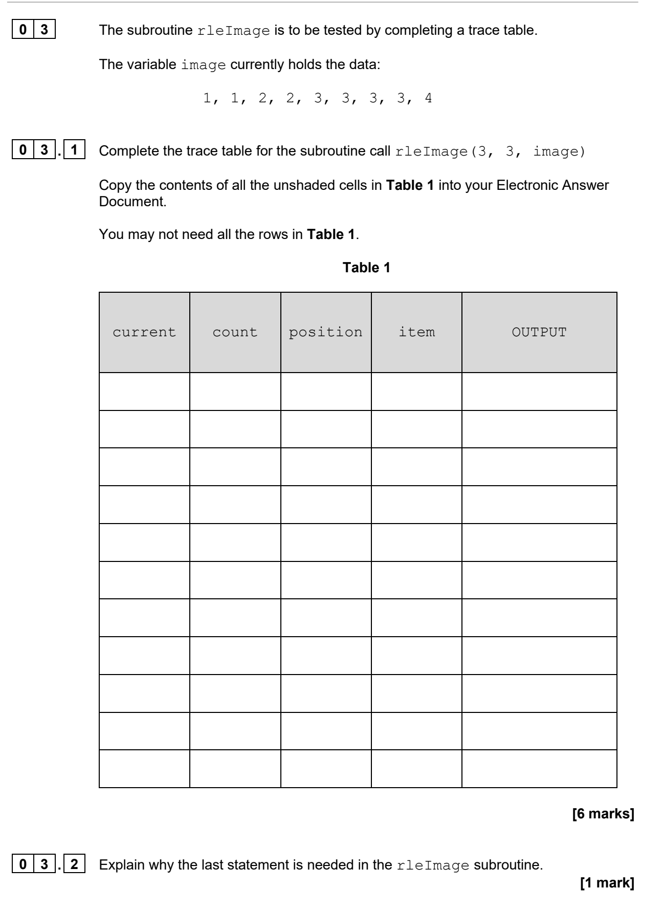
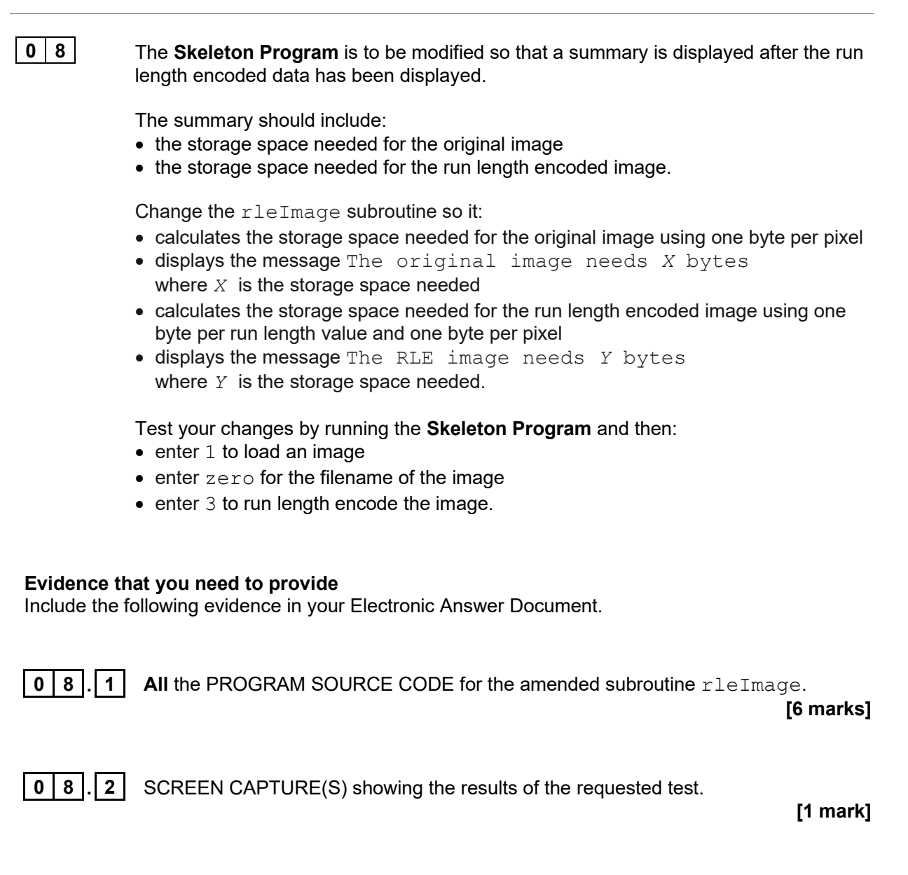
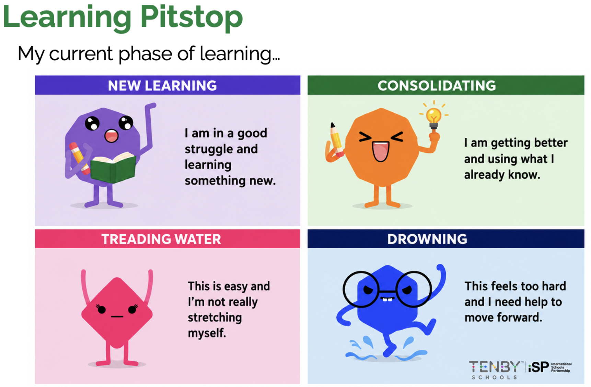
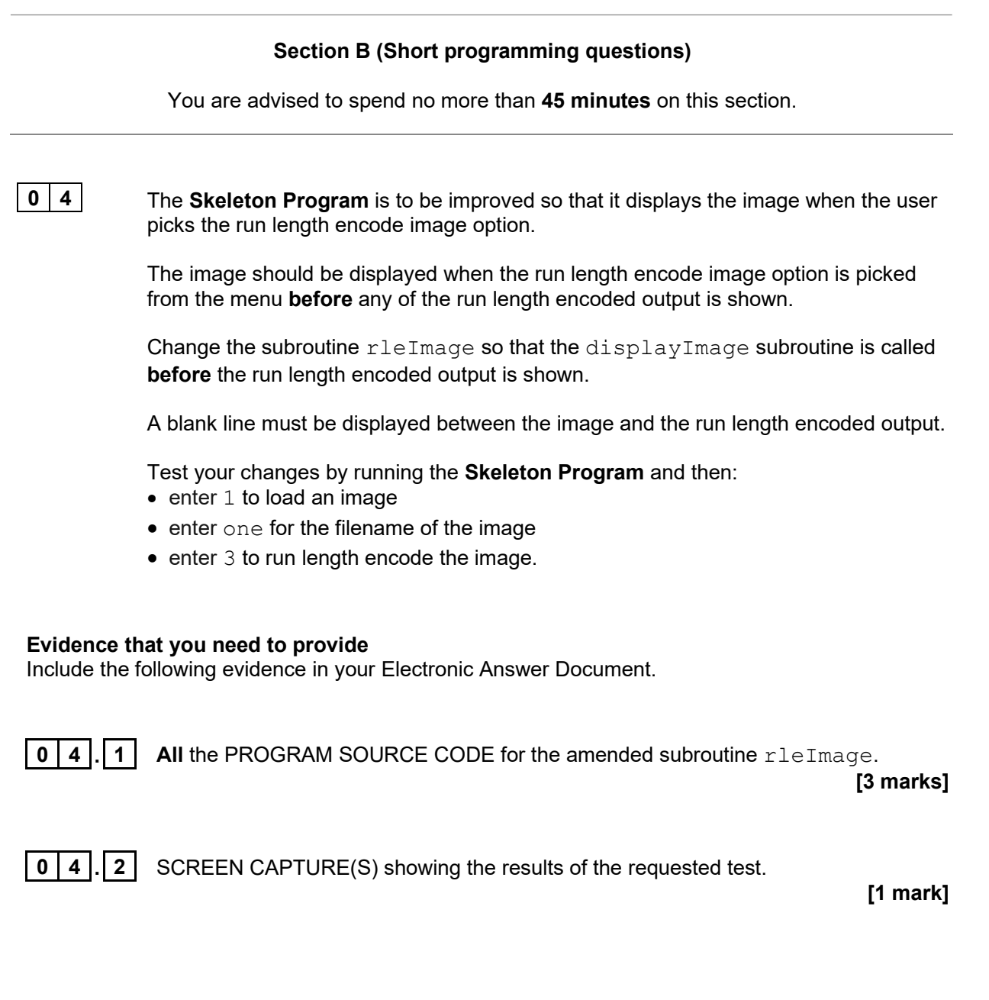

A focused November 2024 Paper 1 lesson using the original question wording, skeleton program and prescribed test files.
SECTION A · TRACESECTION B · MODIFYAO3 · TEST & EVIDENCE
Interactive examination skills lab
Start your learning record
Your answers and evidence save on this device. At the end, download one PDF and submit it to Teams.
No account required · No data leaves this browser
WAGBA · What are we getting better at?Reading and tracing an existing program, then turning precise requirements into a correct, tested and evidenced modification.
Saved
00
Lesson map
One program. One connected journey.
60 minutes
Original-question safeguard
Every official question is displayed as an image captured directly from the supplied November 2024 question paper. Teacher-created guidance and extension material are labelled separately.
Lesson objective
Trace the existing rleImage subroutine, then implement, test and evidence the storage-summary modification in Question 08.
Knowledge
Parameters, local variables, indexing, selection, iteration, accumulators, RLE pairs and bytes.
Skills
Navigate code, trace state, decompose requirements, modify a subroutine, test and capture evidence.
Understanding
Explain when a run finishes, why the final run is handled after the loop and how a prescribed test proves correctness.
01Navigate
→
02Reflect
→
03Trace
→
04Modify
→
05Test
→
06Prove
4Setup
5Starter
3Pit Stop 1
5Trace clinic
12Main 1
9Requirements
17Main 2
5Pit Stop + plenary
Begin by preparing the complete examination package.
01
Before you begin · 4 minutes
Build a reliable workspace
Examination setup
Keep one untouched backup
Download the files into one folder. Keep the original Skeleton Program unchanged and make a fresh working copy for each Section B task.
Use the unchanged Skeleton Program. Answer the three original questions. For this navigation exercise, do not run the program until you have recorded your answers and evidence lines.
Original November 2024 · Questions 01.1–01.3

Save your evidence before identifying the type of learning you used.
03
Learning Pit Stop 1 · 3 minutes
What type of learning did you use?
Reflect with evidence
School learning framework · use this to support the class discussion.
The Starter used all three types. Choose the one that was most important in your own work and prove your choice using a question or line of code.
Choose a learning type
Your next-step guidance will appear here.
This reflection will reappear in your final PDF.
04
Trace clinic · 5 minutes
Follow events, not guesses
Predict · Investigate · Explain
Read firstTrace the state at meaningful events
Record the starting values before the loop.
Follow one position at a time.
Evaluate item != current before changing anything.
Record output only when a print statement executes.
At position 1, the second 1 extends the run to count 2 and produces no output. At position 2, the value changes to 2, so (2,1) is output and the new run begins. After the loop, (1,2) is output because no later change can trigger it.
Now transfer this method to the original trace-table question.
05
Main Activity 1 · 12 minutes
Trace the real subroutine
AO3 · 7 marks
Original Section A task. Do not change the Skeleton Program. Complete the official trace using the event method from the clinic.
Original November 2024 · Questions 03.1–03.2

03.1 Electronic trace table
Record each meaningful event
Add rows if required. Leave a cell blank when the variable or output is not recorded at that event.
current
count
position
item
OUTPUT
Before saving
06
Requirements clinic · 9 minutes
Learn how to plan a program change
Read · model · practise · plan
What are you planning?
You are not writing the finished Python yet. You are making a short map that tells you where to work in rleImage, what state or calculation must change, and what output will prove that the change works.
Read firstThe four ideas Question 08 depends on
The subroutine receives width, height and a one-dimensional list called image. The existing loop already recognises the boundary between one run and the next. Your modification must reuse those facts rather than create a separate compression algorithm.
01
Original storage
The original image contains width × height pixels. At one byte per pixel, the number of pixels is also the number of bytes.
02
RLE storage
Each displayed pair contains a run length and a pixel value. If each value needs one byte, every completed pair adds two bytes.
03
Run boundary
Inside the loop, item != current means the previous run has finished. This is where its pair is printed and where its storage can be counted.
04
Final run
The last run has no later pixel to trigger item != current. Its pair is printed after the loop, so its storage must also be counted there.
Worked example · a different problem
See what a useful plan looks like
Do not write full code yet
Requirement: “Display how many negative readings occur in a list.” A useful plan names the program location, the state change and the evidence—not just “use a loop”.
Requirement
Count negative readings.
→Location
Before and inside the loop that visits each reading.
→Operation
Start a counter at 0; add 1 whenever reading < 0.
→Evidence
Test [4, -2, 7, -1]; the program must display 2.
Guided skill check
Prove that you understand the storage logic
image = [4, 4, 1, 1, 1]
Assume the original uses one byte per pixel and each RLE value uses one byte.
Guided-check feedback
The original uses 5 bytes. There are 2 runs: two 4s and three 1s. Two RLE pairs use 4 bytes. The second pair must be counted after the loop because the list ends before another value can trigger the selection.
Now transfer the method
Question 08 planning frame
Use short, precise sentences
Every row must answer three things:Where? Name the part of rleImage.What? State the calculation or update.Proof? State the required visible result.
Requirement
Your programming plan
Original image storageUse the parameters supplied to rleImage.
Each completed RLE runConnect your plan to the event already detected by the selection.
The final RLE runLook at the final print statement after the loop.
Required messagesMatch the wording and position required by Question 08.
Planning check
Your plan should identify width × height for the original total, two bytes for each completed RLE pair, an update at the run-change event, a separate update for the final run, and both required messages after the encoded data. For zero.txt, the predicted totals are 25 bytes and 14 bytes.
Keep this plan visible while coding. Tick off each requirement only when your test evidence proves it.
07
Main Activity 2 · 17 minutes
Modify, test and prove
AO3 · 7 marks
Work from a fresh Skeleton Program copy. Follow the original Question 08 wording exactly and use zero.txt for the prescribed test.
Original November 2024 · Questions 08.1–08.2

08.1
Complete amended source code
Paste all source code for the amended rleImage subroutine.
Testing record
Open a debugging prompt only if you are stuck
Two bytes too few: check whether the final run is counted.
Total too large: check whether two bytes are added per run rather than per pixel.
Original total incorrect: connect width, height and the number of pixels.
Correct values but missing mark: compare your message wording and screenshot with the question.
08.2
Screen-capture evidence
One clear image may be sufficient. Use the second slot only when required evidence does not fit in one capture.
Evidence image 1 · required
Choose, drop or paste an image.
Evidence image 2 · optional
Use only if a second capture is needed.
Evidence check
08
Learning Pit Stop 2 · 3 minutes
What is your current phase?
Diagnose · act
Earlier commitment
Complete Pit Stop 1 to see your earlier action here.

School learning framework · choose from evidence, not speed or confidence alone.
Review your trace table, source code, test results and screenshot. Choose the phase that best describes today’s WAGBA and support it with evidence.
Choose a phase
Your targeted next step will appear here.
The phase is not a grade. It selects the right next action.
09
Extension routes · optional
Choose the challenge you need
AO3 · confidence or stretch
Select one route. Consolidation uses an unchanged November 2024 task. Deep challenge continues the same RLE scenario with a precise teacher-created requirement.
Original November 2024 task. Use a fresh Skeleton Program copy and one.txt.
Original November 2024 · Questions 04.1–04.2

04.1 Complete amended rleImage source code
04.2 Screen-capture evidence
Evidence image 1
Choose, drop or paste an image.
Evidence image 2 · optional
Use only if needed.
Teacher-created AQA-style continuation · not an original past-paper question
Storage comparison extension
The modified rleImage subroutine already displays the storage needed for the original image and the RLE image. Extend the subroutine so that it also compares those totals.
Your program must:
calculate the positive difference between the two storage totals
display RLE saves X bytes when RLE uses less storage
display RLE uses X extra bytes when RLE uses more storage
display Both formats need the same storage when the totals are equal
display the comparison after the two existing storage messages.
Test A · zero.txt
Expected comparison: RLE saves 11 bytes.
Test B · alternating.txt
Download alternating.txt. Expected comparison: RLE uses 5 extra bytes.
Complete amended rleImage source code
Evidence from both prescribed tests
Evidence image 1
Both tests may appear in one clear capture.
Evidence image 2 · optional
Use if the tests do not fit in one capture.
10
Plenary · 2 minutes
Explain the two updates
AO3 · 4 marks
The RLE storage accumulator is updated when a value change is detected and again after the loop.
Explain why both updates are necessary. Then state one feature of the prescribed test output that proves the storage calculation is correct. [4 marks]
run finishesselectionfinal runafter the loop25 bytes14 bytes
Use cause-and-effect language and refer to the actual program events.
11
Learning record
Check, export and submit
0%
↗
Complete each core learning record.
Your PDF includes both Learning Pit Stops, trace evidence, planning, source code, test results, uploaded evidence and the AO3 plenary.
Submit to Teams
Download your PDF learning record.
Open the assignment in Microsoft Teams.
Attach the downloaded PDF.
Check that the file opens and all evidence images are readable.